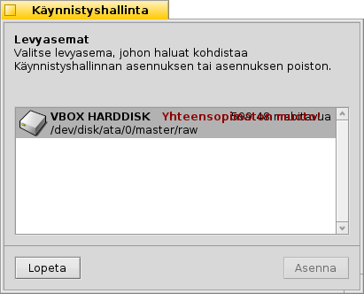

Suomi
Suomi Français
Français Deutsch
Deutsch Italiano
Italiano Русский
Русский Español
Español Svenska
Svenska 日本語
日本語 Українська
Українська 中文 ［中文］
中文 ［中文］ Português
Português Slovenčina
Slovenčina Magyar
Magyar Português (Brazil)
Português (Brazil) English
English Alkulataushallinta
Alkulataushallinta
| Työpöytäpalkki | Ei valikkoriviä, käynnistetään normaalisti Asennusohjelman -valikosta | |
| Sijainti | /boot/system/apps/BootManager | |
| Asetukset | ei ole MBR-varmuuskopiot tallennetaan oletuksena hakemistoon ~/config/settings/bootman/ |
Jos et lisää Haiku-osiota olemassa olevaan alkulataushallintaan kuten GRUB, Alkulataushallinta voi asentaa Master Boot Record (MBR) -tietueeseen pienen alkulatausvalikon, joka näyttää likimain tällaiselta:

Alkulataushallinta ohjaa sinut alkulatausvalikon asennusprosessin lävitse.
 Kohdelevyaseman valitsiminen
Kohdelevyaseman valitsiminen

Alkulataushallinta lähtee kaikkien käytettävissä olevien levyasemien luettelosta, josta valitset kohteen. Jos kohdelevyasemalla on jo olemassa alkulatausvalikko, painike tulee aktiiviseksi johdatellen sinut yksinkertaisen proseduurin lävitse aiemmin varmuuskopioidun MBR:n palauttamiseksi, mikä poistaa taas alkulatausvalikon.
Muussa tapauksessa jatka valitsemalla .
Master Boot Record (MBR) -tietueen varmuuskopiointi
Master Boot Record (MBR) tallennetaan nyt siltä varalta, että jokin menee vikaan ja haluat taas poistaa alkulatausvalikon. Tämä on selvästi hyvin tärkeä askel. Varmista, että et vahingossa korvaa jotain toista MBR-varmuuskopiota esimerkiksi ehkä jostain aikaisemmasta kokeilusta!


Valitse vain varmuuskopiotiedoston "MBR" kohde tai jätä oletuspolku. -painikkeen napsauttamisen jälkeen saat vahvistuksen siitä, että varmuuskopiointi onnistui.
Alkulatausvalikon asettaminen


Seuraavaksi sinulle esitellään kohdelevyaseman kaikkien osioiden luettelo. Asettamalla pukki-merkin päätät siitä, että mitkä osiot ilmaantuvat alkulatausvalikkoon. Tekstilaatikot sallivat sinun nimetä osiot uudelleen.
Sen jälkeen valitset ponnahdusvalikosta, että miltä osiolta alkuladataan oletuksena ja aseta aikavalvonta alla olevasta liukukytkimestä. Tässä "Heti" ohittaa alkulatausvalikon kokonaan. "Ei koskaan" tarkoittaa, että alkulataus pysähtyy alkulatausvalikkoon. Voit ohittaa aikavalvonnan pitämällä ALT-näppäintä alhaalla alkulatauksen aikana.
Alkulatausvalikon kirjoittaminen


Ennen kuin alkulatausvalikko kirjoitetaan MBR-tietueeseen, saat asetuksesi yhteenvedon ja siten viimeisen mahdollisuuden keskeyttää toiminnon. Älä silti murehdi, niin kauan kuin pidät MBR-varmuuskopion tallessa, voit helposti perua muutokset. Jos asiat menevät kunnolla sekaisin, voit aina alkuladata Haikun asennus-CD-levyltä tai USB-tikulta ja kirjoittaa MBR-varmuuskopion takaisin kiintolevylle Alkulataushallinnan avulla.